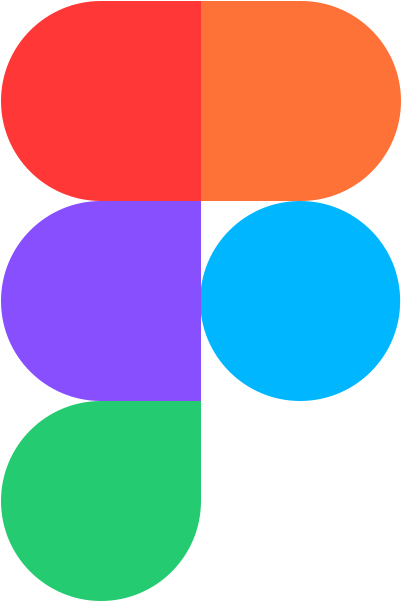

Hur arbetar Unmo med frontend?
-

Figma
Figma är ett design-och-webbprototyp-program som är industristandard för UX designers på webben. Andreas nämner i intervjun att Figma är hur Unmo bygger "Design Tokens," vilket är ungefär som komponenter för designval inuti ett designsystem. Ett designsystem, i sin tur, är det kompletta biblioteket för hur ett varumärke ska presenteras på webben.
"[Design] Tokens make it possible for a design system to have a single source of truth – a repository where style choices are recorded and changes can be tracked."
Läs mer om Figma här -
Storybook
Storybook är ett gratis och open-source verktyg som används för att bygga och dokumentera UI-komponenter isolerat från resten av deras applikation. Det fungerar som ett fristående verktyg där man kan utveckla, testa och visa upp komponenter utan att behöva köra hela appen. Unmo använder Storybook för att samla alla deras komponenter på ett ställe, så att designers och utvecklare har en gemensam plats för dem.
Läs mer om Storybook här. -

React Native
React Native är en version av React (Ett JavaScript ramverk), som är byggt för att skriva native-kod. Native kod är kod som är byggt för ett specifikt operativsystem, i de flesta fallen AndroidOS eller iOS. Alltså är det ett sätt att bygga mobilappar med React. Unmo använder React Native för att bygga deras mobilapp.
Läs mer om React Native här. -

Next.js
Next.js är ett Fullstackramverk som bygger på React och lägger till backendfunktioner som vanligtvis kräver separat konfiguration i ett standard React-projekt. Unmo använder Next.js som deras JavaScript ramverk.
Läs mer om Next.js här.